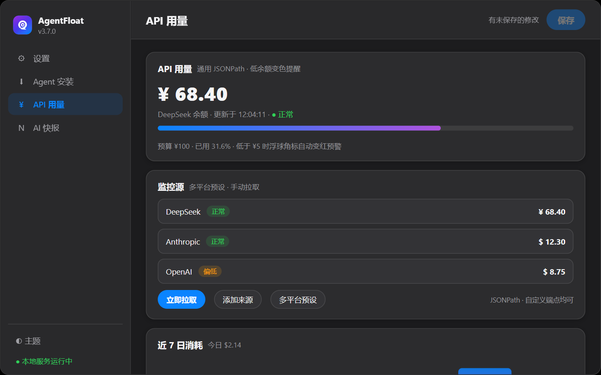
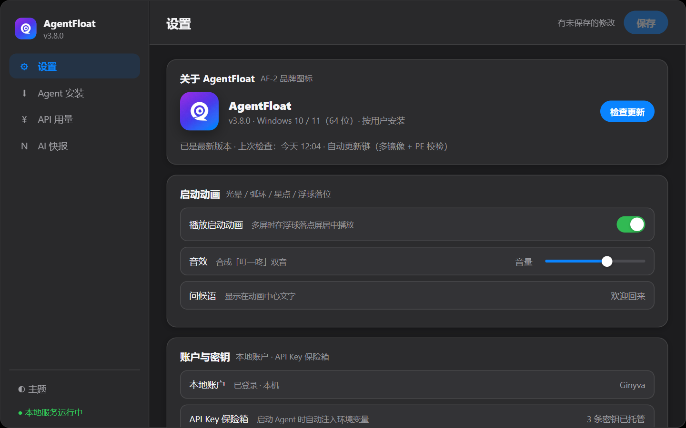
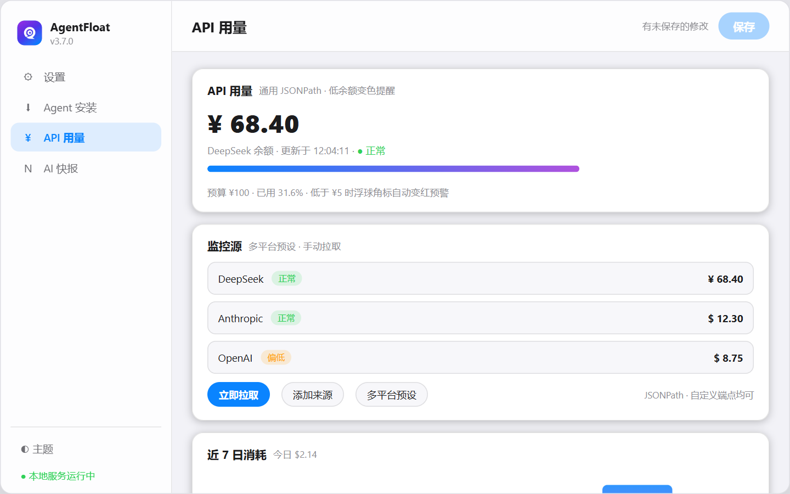

毛玻璃浮窗 · 双主题
亮 / 暗双主题，自由拖拽、贴边吸附、系统托盘、开机自启。
毛玻璃浮窗 × 环绕菜单 × 多 Agent 一键就位：Claude Code、Codex、Pi、DeepSeek Harness——都在一颗球里。
DEMO
从唤醒、启动到监控，三个日常瞬间。
悬停或长按唤出环形菜单：4 / 6 / 8 扇区随心分配动作。
Claude Code / Codex / Pi / DeepSeek Harness：一键安装、升级、卸载，国内镜像优先、官方源自动回退。

通用 JSONPath 的 API 余额监控 + 多源聚合的 AI 快报。
FEATURES
六件事，覆盖你每天打开 AI 工具的所有动作。
亮 / 暗双主题，自由拖拽、贴边吸附、系统托盘、开机自启。
4 / 6 / 8 扇区随心配，悬停或长按唤出，动作自己定义。
Claude Code、Codex CLI、Pi、DeepSeek Harness，一个入口全启动。
npm 全局安装，国内镜像优先、官方源自动回退，进度实时可见。
通用 JSONPath 解析，低余额自动变色预警，一眼看清用量。
Hacker News、GitHub Trending、少数派、量子位、arXiv + 本地摘要。

FLOAT
点击浮球即可启动你常用的 Agent；悬停或长按唤出环绕菜单；自由拖拽、贴边吸附、系统托盘常驻、开机自启，全局热键 Ctrl+Alt+C 随时唤醒——桌面整洁与效率可以兼得。
MENU
菜单以 4 / 6 / 8 扇区展开，每个扇区可分配一个动作：启动某个 Agent、打开链接、调用命令……扇区数量随你的习惯调整，肌肉记忆形成后就再也回不去了。
AGENTS
统一启动器支持 Claude Code、Codex CLI、Pi、DeepSeek Harness（Web UI 模式自动就绪并打开浏览器）；Web 设置里的「Agent 安装」模块负责一键安装、升级、卸载——npm 全局安装，国内镜像优先、官方源自动回退。

INSIGHT
通用 JSONPath 的 API 余额监控：任意服务都能接，低余额自动变色警告；AI 快报聚合 Hacker News、GitHub Trending、少数派、量子位、arXiv，并可用本地 Agent 生成摘要；还有 Skills 辅助窗（本机 skills 扫描 + 中英对照）与剪贴板历史、自定义命令面板。
SCREENS
点击查看大图（部分截图正在补拍中）。
CHANGELOG
完整日志见 GitHub Releases。
交互内核重写（弹簧展开 / 磁吸选中 / 按压微光）；启动速度提升约 7–10 倍；安装包从 151MB 瘦身到 45.3MB。预发布版不进入自动更新链，稳定版用户不受影响。
Claude Code / Codex CLI / Pi / DeepSeek Harness 一键安装、升级、卸载（npm 全局安装，国内镜像优先、官方源自动回退）；Web 套壳后端稳定性修复。
设置 / API 用量 / AI 快报整体迁移为 Web 界面（FastAPI + pywebview，SSE 实时推送）；统一 Agent 启动器新增 DeepSeek Harness。
毛玻璃浮球、环绕菜单、Skills 辅助窗、API 余额监控、AI 快报、剪贴板历史与自定义命令面板。
DOWNLOAD
免费使用 · 本地运行 · 密钥存本机
想尝鲜？v3.0.0-beta 重构预览版（预发布 · 不进入自动更新链）
下载由 GitHub Releases 提供；国内访问可能较慢，请耐心等待或稍后重试。
* 已手动装好 Agent 的用户，不装 Node.js 也能直接启动使用。
FAQ
当前完全免费使用；未来如有变化会提前公告，已发布的版本不受影响。
ClaudeFloat 是它的前身——只面向 Claude Code 的极简启动器；AgentFloat 把启动器升级为多 Agent 工作台，加入环绕菜单、API 余额监控与 AI 快报等整套工作流。
不强制。内置「Agent 安装」模块可一键安装 Claude Code / Codex CLI / Pi / DeepSeek Harness（走 npm，需要本机有 Node.js）；已经装好的 Agent 也会被自动识别并启动。
配置与密钥只保存在本机 config.json，不会上传到任何服务器。
浮球与本地 Agent 启动完全离线可用；只有「API 余额监控」与「AI 快报」需要网络。
目前是 Windows 10 / 11（64 位）。
覆盖安装即可升级（配置保留）；在控制面板可完整卸载，便携版本直接删除即可。